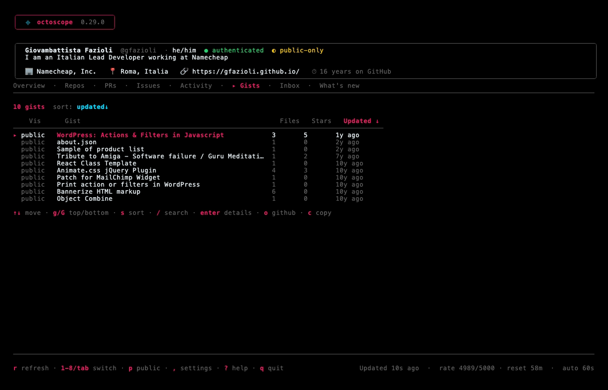
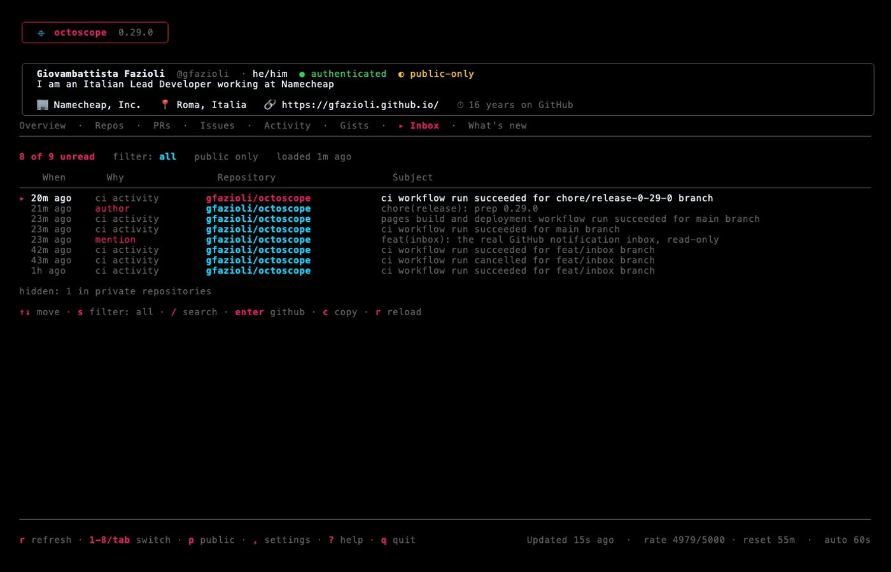

Guide
The tabs
octoscope is eight views over one account, each a number key away. The banner, profile card, tab bar and footer stay pinned — only the body swaps.
1 Overview
The landing dashboard — your whole account in one paint, grouped into six sub-sections:
- Profile — name, login, pronouns, bio, company, location, website, and how many years you've been on GitHub.
- Social — followers, following, and total stars received across your non-fork repositories.
- Activity — lifetime PRs authored and merged, issues opened, commits in the last year, and a languages bar in GitHub's own hex colours.
- Operational — repositories, forks received, and the open issues / open PRs you own.
- Sponsors — who funds this account and who it funds, by name, plus GitHub's own monthly income estimate for your own account only (GitHub answers that field with 0 for anybody else, so it is never shown where a zero could be mistaken for a measurement). Absent entirely unless there is something to say. There is no tier, date or amount, and no way to tell a public sponsor from a private one — all of that needs the
read:userscope — which is also why--public-onlydrops the section rather than guessing which names are safe to draw. - Network — organisations you belong to and your verified social accounts.
plus a Top repositories list. Counters tagged (own) are your account's; the rest are lifetime totals.

2 Repos
Every repository you own, sortable, with a CI rollup dot, stars, forks, open issues/PRs, last push and latest release. Pinned repos (P) ride a sticky section at the top; watched repos from your config sit below.
Three keys shape the list: s cycles the sort, / filters by substring, and w cycles the work filters — PRs open, CI broken, stale 90 days — to narrow the tab to what actually needs attention.

3 PRs · 4 Issues
The pull requests and issues you've opened, plus — for your own account — a sticky review-requests inbox at the top of the PRs tab, so what's waiting on you surfaces first. Both tabs share the Repos sort (s) and filter (/); Issues can be pinned (P) too.


5 Activity
Two halves at different zoom levels, switched with ← / →. The heatmap answers how much; the feed answers what.
Heatmap — a 12-month contribution graph, in your terminal, plus the totals it implies: contributions, current streak, longest streak and busiest day. It honours the active theme (a pink gradient, or shades of the theme's own palette under a monochromatic one).

Feed — the timeline underneath the graph: pushes, pull requests opened and merged, reviews, issues, releases, branches created and deleted, newest first, across every repository at once. enter opens the row's subject on GitHub, c copies its link, / filters on anything the row shows.
It is recent, not a history, and says so: GitHub keeps a limited window of events and octoscope reads one page of 100 from it — on a busy account that can be two days. The line under the table names the span it actually got.
Review and comment traffic on one subject is folded into a single row with a ×N count, so a heavily-reviewed pull request does not bury the rest of the week. Only adjacent events on the same subject fold, nothing is reordered, and anything that changed state — including an approval — always keeps its own line. Pull-request rows carry a title when the same page contains a comment naming it; GitHub's own pull-request payload here has no title field at all, so where none can be found the row shows the bare number instead of inventing one.
The feed loads when you open it rather than on every refresh: GitHub asks callers to poll this endpoint no more than once a minute, and --refresh goes as low as 5s. Under --public-only it asks the public-events endpoint, so private-repository activity is never fetched at all.
6 Gists
Your gists, newest first — visibility, file count, stars and when each last changed. enter drills in: a multi-file gist shows its files, and enter again opens one; a one-file gist opens straight into it, because that is the only thing there was to see.
The file view is the point of the tab. A gist is a snippet, so it is shown syntax-highlighted and scrollable, and c there copies the code rather than the link — the first cut of this tab could only send you to the browser, which is what octoscope exists to avoid. GitHub truncates very large files and a gist can hold a binary; both are said out loud instead of being rendered as noise.
Two details worth knowing. A gist's real name is a hash, so an untitled one is listed by its first filename instead — and the filter matches that, so you can find it by the name you can actually see. And under --public-only the secret ones are never requested rather than fetched and hidden, which keeps the count honest too: a “10 of 16” would itself have told anyone watching that six secret gists exist.

7 Inbox
Your actual GitHub notification inbox — mentions, review requests, assignments, subscriptions, CI activity — unread only, newest first. That last part has a visible consequence: open a thread and it leaves the tab on the next reload, because GitHub marked it read when you arrived. enter opens the thread on GitHub, c copies its link, / filters, and s cycles a three-way filter: all, involving you, ci.
That filter exists because of a measurement: of 104 notifications on a real account, 77 were CI activity. The default is still all — an inbox that hides most of itself is worse than a noisy one — and the line under the table always states how many rows the current filter is hiding.
Read-only, like the rest of octoscope. Marking a thread read is a PATCH, so enter takes you to GitHub and GitHub marks it read. There is deliberately no --allow-mutations flag: that would make this a different product with a different trust model. The tab says so out loud rather than leaving you hunting for a key that does not exist.
It needs a classic personal access token, with the notifications or repo scope. That is GitHub's constraint rather than octoscope's — the reference documents this endpoint as supporting “only… a personal access token (classic)” — so a fine-grained token cannot load this one tab however it is scoped. When that happens the tab says which kind of token is needed rather than reporting a missing permission that does not exist.
It loads when you open the tab rather than on every refresh — GitHub asks callers to poll this endpoint no more than once a minute. GitHub also does not return the inbox in time order, so octoscope sorts it. Under --public-only notifications from private repositories are dropped, and under someone else's profile the tab explains that there is nothing to show: the endpoint has no login parameter, so “their inbox” does not exist.

8 What's new
A bundled, offline changelog of the running version's highlights — shown right after an upgrade, no network needed. It's also where the support links live: o opens the Sponsors page, c copies the link.